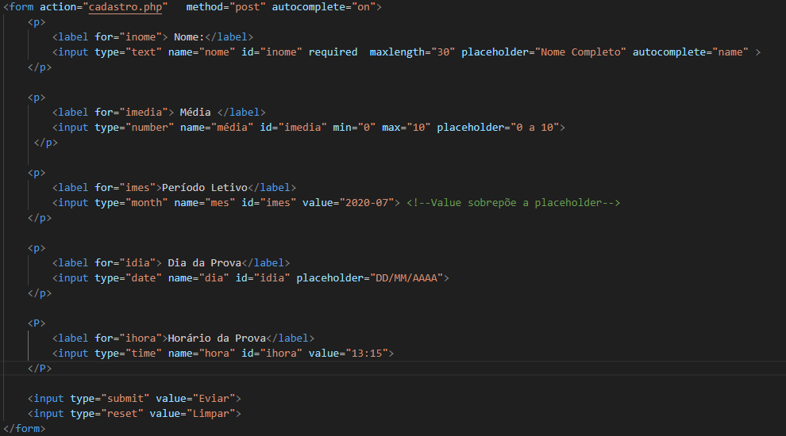

Voltar
Index
FORMULÁRIO 4
min="0" max="10" define os valores numericos em type="number"
step=0.5 cria uma dropbox (mouse over) além de aceitar incrementos diferentes de inteiros.
O input type TEXT aceita tudo, já o NUMBER, só números.
REQUERID MAXLENGTH E MINLENGTH limitam a quantidade de caracteres nos campos.
size="n°" delimita o tamanho que o box tem (aproximandamente).
placeholder="Dica que aparece no box antes de preencher".
autocomplete="off" ou "on" para habilitar ou não o autocomplementar.
autocomplete="opções" em form tem só duas opções, mas em input tem várias opções.
Esse botão envia para o arquivo cadstro.php para receber os envios.
Nota-se na url que o conteúdo enviado não aparece (post). Se fosse log e pass, isso seria um problema. (get)
No input tem REQUIRED que não permite envio com box vazio.
